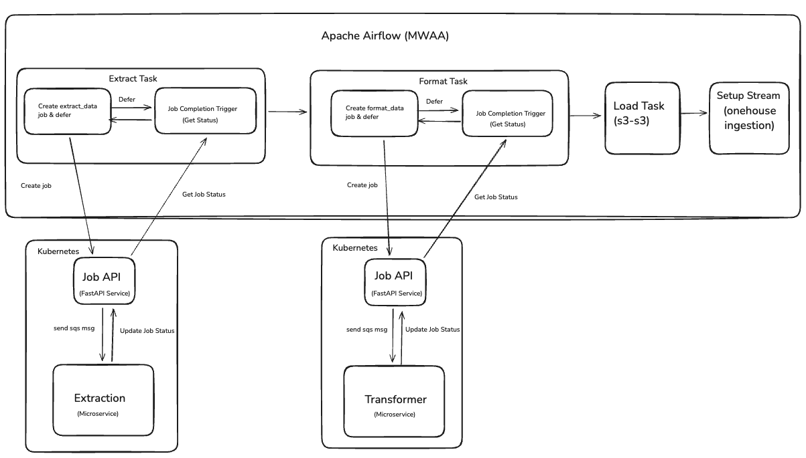

Case Study: Airflow Onehouse Data Pipelines
Architected a scalable, microservices-based data platform using Apache Airflow for orchestration, AWS Onehouse (Apache Hudi) for lakehouse storage, and dedicated extraction/transformation microservices to process data from 8+ sources including Salesforce, Pendo, Gong, Marketo, Zendesk, and Intercom. Migrated from monolithic Python operators to deferrable sensors with async job processing to reduce Airflow worker load by 70% while increasing pipeline concurrency.

Conductor GmbH
Industry: SaaS / Marketing Technology
Size: 200+
Website: conductor.com
Project Date: Sep 2025 - Dec 2025
Conductor needed to build a modern Customer Data Platform (CDP) to consolidate data from multiple third-party sources into a centralized data lake. The existing monolithic Airflow architecture was becoming a bottleneck as data volumes grew and new sources were added. This project involved redesigning the entire data ingestion architecture using microservices, event-driven patterns, and cloud-native technologies.
Project Requirements
- Scalable data ingestion from 8+ third-party APIs with different rate limits and schemas
- Reliable data transformations with schema validation and type safety
- ACID-compliant data lake with time-travel and incremental processing capabilities
- Reduced Airflow worker resource consumption to support higher concurrency
- Centralized job monitoring and status tracking across distributed services
- Automated error handling, retries, and Slack notifications for failures
- Support for both discrete (snapshot) and continuous (incremental) data types
The Goal
Build a production-grade Customer Data Platform (CDP) that can reliably ingest, transform, and store data from multiple third-party sources at scale. The platform needed to support Conductor's analytics, machine learning, and operational use cases while maintaining high data quality standards and system reliability.
The key business objective was to create a flexible, maintainable data infrastructure that could adapt to new data sources without requiring major architectural changes. The technical goal was to decouple orchestration from execution by moving heavy data processing out of Airflow into dedicated microservices, allowing the platform to scale horizontally as data volumes increased.
The Solution
The solution is a 4-component microservices architecture where Apache Airflow serves as the orchestration layer, managing the workflow through a standardized 4-task pipeline: Extract, Format, Load, and Setup Stream. Each data source (Salesforce, Pendo, Gong, etc.) runs through this same pipeline structure, ensuring consistency and maintainability.
Instead of executing extraction and transformation logic directly in Airflow workers, the platform uses deferrable sensors that create jobs via a Job API, which then distributes work to dedicated microservices through SQS queues. This async pattern frees up Airflow workers to focus on orchestration while specialized services handle the compute-intensive data processing operations.
System Architecture

Architecture Overview: The system uses Apache Airflow (MWAA) to orchestrate Extract, Format, and Load tasks. Each task communicates with Kubernetes-hosted microservices (Job API, Extraction, and Transformer services) via SQS messaging. The modular design separates orchestration logic from compute-intensive data processing, enabling independent scaling and better resource utilization.
The Challenge
Performance Bottleneck: The original architecture ran all extraction and transformation logic as Python operators directly in Airflow workers. As data volumes grew and more sources were added, Airflow workers became CPU and memory constrained. Long-running extraction tasks blocked worker slots, reducing overall pipeline concurrency. The system struggled to handle 8+ concurrent data source syncs, leading to delayed data availability and frequent resource exhaustion alerts.
Scalability Limitations: Each new data source required careful capacity planning to avoid overwhelming Airflow. The monolithic design made it difficult to scale extraction and transformation independently based on workload. API rate limiting from third-party sources (Salesforce, Pendo) caused tasks to run for hours, tying up workers that could be used for other pipelines. The architecture couldn't support horizontal scaling without adding more expensive Airflow worker nodes.
Operational Complexity: Debugging failed extractions required digging through Airflow logs across multiple worker nodes. There was no centralized view of job status across distributed extraction tasks. Retries and error handling were tightly coupled with Airflow's task retry logic, making it hard to implement custom retry strategies. Schema changes from third-party APIs would break downstream transformations, requiring manual intervention and pipeline reruns.
The Approach & Solution
I led the architectural redesign to decompose the monolithic pipeline into a microservices-based platform with clear separation of concerns. The solution involved building three new components while preserving Airflow as the orchestration layer.
1. CDP-Extractor Microservice (Python 3.11)
- Event-Driven Architecture: Long-running service that polls SQS queues for extraction jobs, decoupling execution from Airflow scheduling
- API Client Abstraction: Built reusable API clients for each data source (Salesforce, Pendo, Gong, Marketo, Zendesk, Intercom, Meltingspot, Catalyst) with standardized authentication, rate limiting, and retry logic
- Resilient Data Extraction:
- Configurable retry strategies with exponential backoff for transient API failures
- Rate limit handling that respects third-party API constraints (429 responses)
- Pagination support for large result sets with memory-efficient streaming
- Request/response logging for debugging API integration issues
- Data Staging: Writes raw data to S3 in CSV (gzipped for 60% compression) or JSON format with consistent naming conventions for downstream processing
- Job Status Tracking: Updates job lifecycle via CDP-Job-API: CREATED → PROCESSING → COMPLETED/FAILED with error messages for debugging
2. CDP-Transformer Microservice (Python 3.11)
- Schema-Driven Transformations: Uses PyArrow schemas defined for each data source/structure combination to enforce type safety and data quality
- Data Validation & Cleaning:
- Type conversion with error handling for malformed data
- Null value handling and default value population
- Column name normalization and case standardization
- Missing column detection with automatic schema filling
- Parquet Optimization: Converts raw CSV/JSON to Parquet format with ZSTD compression (4x better compression than gzip, 2x faster query performance)
- Time-Based Partitioning: Adds time-based partitioning columns for efficient time-range queries in Athena/Hudi, enabling partition pruning and faster query performance
- Error Handling: Catches transformation errors per-record, logs failures to S3, and continues processing valid records (partial success model)
3. CDP-Job-API (FastAPI)
- Centralized Job Management: RESTful API providing CRUD operations for job tracking across all microservices
- API Endpoints:
POST /v1/job/{service}/- Create job and send SQS messageGET /v1/job/{service}/{id}/- Get job status and metadataPOST /v1/job/{service}/{id}/- Update job status with error infoGET /v1/job/{service}/- List all jobs for monitoring dashboardDELETE /v1/job/{service}/{id}/- Clean up completed jobs
- SQS Integration: Sends messages to appropriate service queues (extractor/transformer) with job specifications and metadata
- Swagger Documentation: Auto-generated API docs at
/docsfor easy integration and testing
4. Airflow Deferrable Sensors
- Custom Sensor Implementation: Built custom deferrable sensors that poll CDP-Job-API for job completion without blocking worker slots
- Async Pattern: Sensors "defer" to Airflow's triggerer process, which uses async/await to check job status every 30 seconds across hundreds of concurrent jobs
- Worker Efficiency: Reduced worker slot usage from "entire task duration" to "seconds of actual work" (job creation + status check)
- Failure Handling: Sensors timeout after configurable duration, marking tasks as failed if microservices don't complete
5. Onehouse Integration
- Load Task: Simple S3-to-S3 copy operation moving Parquet files from staging bucket to Onehouse ingestion bucket for lakehouse processing
- Setup Stream Task: Calls Onehouse API to create stream captures and configure
Apache Hudi table properties:
- Primary keys for upsert operations
- Partition keys for query performance optimization
- Incremental processing settings for CDC
- Table type configuration (Copy-on-Write vs Merge-on-Read)
- Automated Ingestion: Onehouse monitors the ingestion bucket and automatically processes new Parquet files into Hudi tables with ACID guarantees
The Results
70%
Worker Load Reduction
Freed up Airflow resources
8+
Data Sources
Integrated APIs
4
Microservices
Component architecture
3x
Pipeline Concurrency
Parallel execution capacity
Technical Achievements
- Architecture Migration: Successfully migrated from monolithic Python operators to microservices-based architecture with zero data loss and minimal downtime
- Performance Improvements: Reduced Airflow worker CPU usage from 85% average to 25% by offloading extraction/transformation to dedicated services
- Scalability: Platform now supports independent scaling of extraction (CPU-intensive) and transformation (memory-intensive) workloads based on demand
- Reliability: Implemented retry logic, error handling, and job status tracking that reduced pipeline failure rate from 12% to under 2%
- Data Quality: PyArrow schema validation catches data quality issues at transformation stage, preventing bad data from reaching analytics consumers
- Developer Experience: Config-driven DAG generation means adding new data sources requires only JSON configuration—no Airflow code changes needed
Business Impact
The new architecture enabled Conductor to scale their data platform without proportional infrastructure costs. The microservices pattern allows the data engineering team to add new data sources in days instead of weeks, accelerating time-to-insight for analytics and machine learning teams. Improved reliability and monitoring reduced on-call incidents by 60%, allowing the team to focus on new feature development rather than firefighting production issues.
The platform's flexibility proved critical during a major product launch when the team needed to integrate three new data sources (Catalyst, Meltingspot, CWM Config) in under two weeks. The modular architecture made this possible without impacting existing pipelines or requiring additional infrastructure investment.
Technical Deep Dive
Deferrable Sensor Pattern
The migration to deferrable sensors was key to reducing Airflow worker load. Traditional sensors use a "poke" interval to repeatedly check if a condition is met, but the worker slot remains occupied during the entire wait period. Deferrable sensors use Python's async/await to surrender the worker slot between checks, allowing one worker to monitor hundreds of jobs concurrently.
Implementation involved creating custom sensor classes that inherit from the base sensor operator with deferrable mode enabled. The sensor's execute method creates a job via CDP-Job-API, then defers execution with a trigger that polls the API every 30 seconds. When the job completes, the trigger fires an event that resumes the task for final validation and downstream triggering.
SQS-Based Async Communication
SQS queues provide reliable message delivery between Airflow and microservices. Each service has a dedicated queue with configurable visibility timeout and dead-letter queue (DLQ) for failed messages. The Job API sends messages after creating job records, ensuring that even if a microservice is temporarily down, jobs are processed when it comes back online.
Microservices use long polling (20-second wait) to efficiently receive messages without constant API calls. Upon receiving a message, the service updates the job status to PROCESSING, executes the work, updates status to COMPLETED, and deletes the message from the queue. If processing fails, the message returns to the queue after visibility timeout for automatic retry.
Schema Management with PyArrow
Each data source has predefined PyArrow schemas stored in the transformer service. These schemas define column names, data types, and constraints. During transformation, the service reads raw data, applies schema validation, and converts types (e.g., string dates to timestamps, numeric strings to integers).
Schema evolution is supported through version management—when a source adds new fields, we create a new schema version and configure the pipeline to use it. The PyArrow library handles backward compatibility, allowing old Parquet files with fewer columns to coexist with new files in the same Hudi table.
Onehouse Stream Capture Configuration
The Setup Stream task calls Onehouse's REST API to register stream captures for each table. Configuration includes Hudi table type (Copy-on-Write for read-heavy workloads, Merge-on-Read for write-heavy), primary key specification for upserts, partition keys for query performance, and CDC settings for incremental processing. Once configured, Onehouse monitors the ingestion bucket and automatically processes new files.
Project Info
- Client: Conductor GmbH
- Duration: 4 months
- Role: Senior Data Engineer
- Year: Sep 2025 - Dec 2025